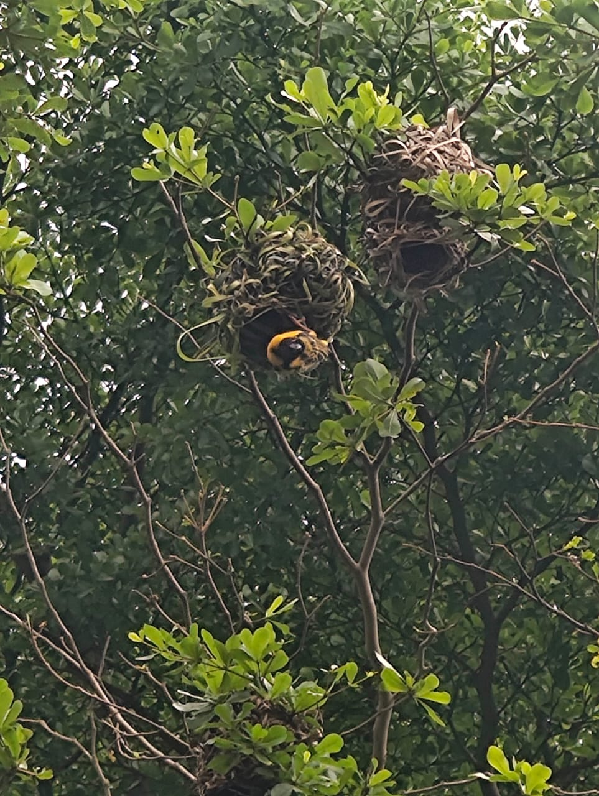

My Personal Resume

Summary
Results-driven QA Lead with expertise in WebdriverIO, Appium, and CI/CD pipeline stabilization. Skilled in technical troubleshooting, selector strategies, and async behavior debugging. Adept at shaping inclusive workplace culture while delivering scalable automation solutions that improve reliability and efficiency.
Education
- Bachelor in Biochemistry
- School: University of Yaounde 1
- Year: 2005-2008
- Bachelor in Computer science
- University of Yaounde 1
- Year: 2009 - 2012
- Masters in Environmental Engineering
- School: National Advanced School of Public works
- Year: 2012 - 2017
Work experiences
- Isometrix
- Dates: May 2021 - April 2022
- Job Title: Junior QA engineer
- Responsibilities: Manual Testing, Test case writing, Automated Scripts writing(RestAssured, Java and selenium), Execution of automated test scripts
- Protech Alliance
- Dates: March 2019 - March 2021
- Job Title: Junior QA engineer
- Responsibilities: Manual Testing, Test case writing, Automated Scripts writing(RestAssured, Java and selenium), Execution of automated test scripts
- Gozem
- Dates: September 2022 - present
- Job Title: Senior QA engineer
- Responsibilities: Manual Testing, Test case writing, Automated Scripts writing(Javascript, Webdriverio, Appium and selenium), Execution of automated test scripts, CI-CD pipeline setup on gitlab
Skills
- SQA Testing & Methodologies
- Test Plans, Cases & Processes
- Agile Project: Scrum & Kanban
- Tools: Git, GitHub,Gitlab, Chrome developer
- CI/CD: Cucumber, Jenkins,Gitlab
- Regression & Negative Testing
- UI & Compatibility Testing
- Data Interface & Migration Testing
- Performance, Load & Stress Testing
- Programming: Java, Python, JavaScript
- Database: SQL MongoDB
- OS: Windows, MacOS, Android, iOS
- Testing Automation: Selenium WebDriver, Cypress, katalon Studio, Appium
- Defect & Bug Tracking
- Test Strategies & Coverages
- QA & QC Standards
Awards
- Process Improvement Award at ISOMETRIX - For streamlining workflows, reducing test cycle time, and stabilizing CI/CD pipelines.